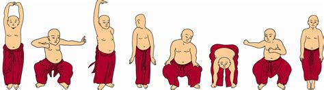
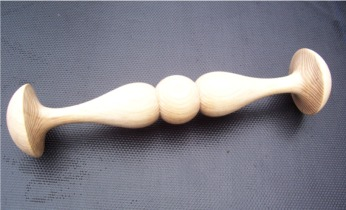
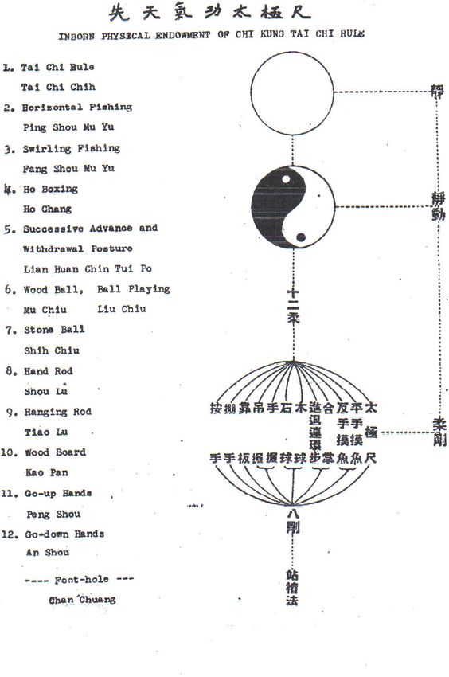
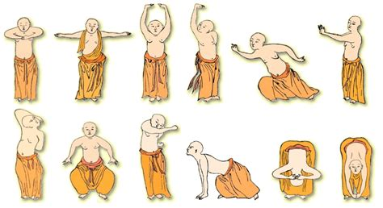
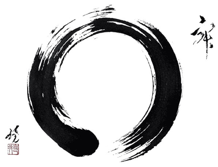
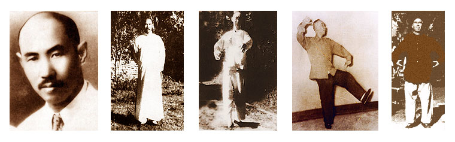
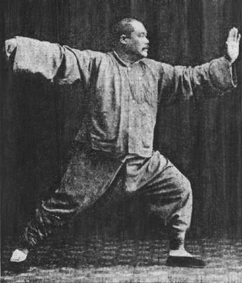

Baduanjin

Baduan literally means “eight sections” and jin, “brocade”.
Like most popular traditions in any culture the origins of Baduanjin are shrouded in myth and legend. Some say they began several thousands of years ago. There are, in fact, historical records of exercises that resemble Baduanjin dating back 4000 years to the time of the Yao settlements. An exciting piece of evidence was unearthed in the late 1970’s known as the Dao Ying Xing Qi Fa (Method of Inducing Free Flow of Chi). This silk book dates from the Western Han Dynasty and contains 44 drawings of men and women from different social classes in exercise postures very similar to Baduanjin.
Baduanjin
It is known for certain that the famous General Yeuh Fei who lived during the Southern Sung Dynasty developed a set of 12 exercises to train his army. These later, he simplified to eight. In the course of its development, Baduanjin has appeared in a number of different versions. Two fo the more popular versions are one done seated and another done standing. The seated version was devised by Zhong Li in the Tang dynasty (618-907) and rearrand rearranged by Li Shixin, a lecturer in the Physical Education Department of Beijing University. The standing version was compiled by Zhuo Dahong, associate professor at Zhangshan medical College, on the basis of several already existing standing versions. Today visitors at the Shaolin Temple in Henan, China can see statues of monks performing Baduanjin and use them as part of their daily training. Listed below are the names of the eight standing movements:
- Supporting the Heavens with Two Hands (Tonify the triple warmer)
- Drawing the Bow as Though Shooting the Eagle (Tonify the lungs)
- Separating Heaven and Earth (Tonify stomach and spleen)
- Wise Owl Gazes Backwards (Tonify eyes, neck, and spine)
- Shake the Head and Wag the Tail (Tonify the heart)
- Reaching Down to Dissipate Kidney Disease (Tonify kidneys and lower back)
- Punching with Intense Gaze to Increase Ch’i (Improves strength and shoulders)
- Shaking Body to Ward Off Disease (Helps release tension)
Also listed below are the seated movements:
- Internal focus with clenched fists (Helps to stabilize body and mind)
- Relax the whole body.
- Clench fists and focus there for about 10-15 breathes.
- Hold the Mountain with Hands (Knock teeth 36 times)
- Interlock fingers behind head
- Strike upper teeth with lower teeth 36 times.
- Sound Heavenly Drum (Tap fingers 24 times)
- Move hand to cover ears.
- Tap back of head 24 times with middle finger pressed under index finger.
- Rotate the Heavenly Pillar (10 times)
- Slowly rotate the head around the shoulders 5-10 times in each direction.
- Whirlpool (36 times, swallow in 3 gulps to dantian)
- Stir tongue 36 times between hard and soft palates to produce a mouthful of saliva.
- Swallow it in three gulps.
- Rub Lower Back (Rub hands to make them warm)
- Rub hands together until warm.
- Slowly massage lower back with both hands 36 times.
- Push breath down (3 times, do so gently)
- Inhale, hold it, then breath out and push downward.
- Rotate Shoulders (36 times)
- Rotate shoulders as if hands are hold the pedals of bike.
- Support Heaven with Two Hands (9 times)
- Palms up, raise hands over head with fingers interlocked.
- Pull Toes with Two Hands (9 times)
- Grasp middle part of both soles with separate hands and pull feet.
-
Whirlpool (36 times, swallow in 3 gulps to dantian, a repeat of #5)
-
Prime the Orbit (3 times, a repeat of #7)
We like to finish with some isometrics and relaxation techniques then do microcosmic orbit meditation.
Taiji Ruler

Taiji Chih or Ruler (no relationship with Taijiquan) is a sacred and secret qigong first made public in 1954 by Master Zhao Zhong-dao. It is called the Ruler (Chi, sometimes spelled Chih) because during the basic exercise the hands are held about a foot apart. You may practice this qigong while holding a foot-long “Ruler” between the palms. The Ruler is made of a light porous wood such as willow and rounded at both ends so it fits comfortably in the hands. The physical ruler encourages the flow of ch’i. The Taiji Chih system consists of gentle rocking and swaying movements that build ch’i in the feet, the dantian, and the hands. It can be used for self-healing or as a preparation for any form of massage therapy or therapeutic touch. Your hands will feel warm, vibrating, full of healing power after a few minutes’ practice. In the United States, several bizarre variations to the Ruler have become popular, many with little relationship to Zhao’s original techniques. The method we present here at Daoyin Chuan has been handed down from direct students of Zhao, several second- or third generation students, and then corroborated by comparison with Zhao’s original Chinese text.
The Ruler has a fascinating and venerable history. The Taiji Chih is one of the several forms of qigong attributed to the tenth-century Daoist recluse Chen Xi-yi. Chen lived on Mount Hua, the Daoist sacred mountain in Shenxi Province. The Jade Spring Temple at the foot of the mountain was designed by Chen and contains a statue of him. The monks still recount a legend that after Chen died, his bones glowed with red light. A visitor once stole a shinbone. This so infuriated the monks that they moved his remains to a secret location, never again revealed.
For many years Chen was friends with a young visitor name Zhao Kuang-yin. Zhao loved the beauty of the mountains and frequently journeyed to Mount Hua to join Chen in two of his favorite pastimes: playing Chinese chess and practicing qigong. Years later, when Zhao rose to power as the first emperor of the Song Dynasty, he taught Master Chen’s qigong methods to his children. Chen’s T’ai-Chi Chih method was maintained within the imperial family, passed down from generation to generation as a precious heirloom and secret to good health. Toward the middle of the nineteenth century, the art was transmitted to a direct descendant, Zhao Zhong-dao (1844-1962). Just before Zhao’s grandmother died at age 108, she told her twenty-two year old grandson, “Although the Taiji Chih cannot make you an immortal, it can certainly rid you of disease and increase your life span. Do not overlook it.”
Zhao kept up the family practice, and in 1954 he founded in Beijing “The Gentle Art of Taiji Health Society,” the first school to publicly teach the Taiji Chih. The Society was like a university teaching hospital. Scientists and qigong practitioners from all over China came to learn the art. Patients with debilitating and chronic diseases arrived for treatment. The Society was very successful treating digestive and nervous system disorders, insomnia, high blood pressure, and numerous other problems that had failed to respond to medical treatment.
According to Master Zhao’s biography, when Zhao passed on at age 118, “He did not have the appearance of a flickering lamp. On the contrary, he had a child’s complexion and silvery hair. His face exuded a health reddish glow and he could chat for hours. One glance and you knew this was an exceptional human being… . His hearing and vision were sharp. He had strong teeth, unwrinkled skin, and he slept and ate like a young man.”
The Taiji Chih is a complex and complete system of ch’i development that includes numerous solo exercises, exercises with training equipment, and two-person routines. Almost all teachers of the Ruler begin with the same foundation exercises. Here is a good article about Tai-chi Ruler Article by Bob Flaws.
Taiji Ruler Set

Taiji Ruler Youtube Video
Yijinjing

DaMo or Bodhidharma, an Indian holy man, came to China where he came upon the Shaolin Temple. While there he noticed the deplorable state of health the monks had. DaMo then went into seclusion into a natural rock cave for nine years. During that time he invented a form of ch’i-kung called Yijinjing (meaning “Muscle/Tendon Transformation”). And though DaMo certainly must have drawn upon his Indian yoga techniques in inventing Yijinjing, what he actually did was combine his own internal kung fu theory to the already existing Chinese theory of qigong, while taking the differences in Chinese physiology and physical environment into account. Chinese ch’i-kung was actually invented independently approximately 3,000 years ago, curiously enough also by a religious leader, Lao Tze, the founder of Taoism.
Yijinjing is a very important part of qigong, but that there are other forms of ch’i-kung in existence. Yijinjing is an internal exercise that makes the body almost indestructible, capable of withstanding tremendous physical force and even injury from knife stabbing.
In addition to Yijinjing, DaMo invented another type of ch’i-kung called Xi Shui Jin or “Essence of Bone Washing,” an internal exercise designed to cleanse the body. A later Shaolin Monk called Fu Yu Chan Shi invented two other forms of Shaolin ch’i-kung: baduanjin, meaning “Eight Section Brocade,” an internal exercise practiced to make the body as soft and flexible as cotton to increase healthiness, rejuvenation, and longevity, and Shi Da Gong Fa, meaning “Ten Great Skills,” an internal exercise to make the body as hard as iron, and a very important skill in developing hard ch’i-kung breaking skills. What Yijinjing and the other forms of qigong have in common is ch’i.
Ch’i is usually translated as “breath,” “life principle” or “power,” and though all of these terms are partially correct, none alone conveys ch’i’s true essence. Ch’i-kung allows us to combine the external forces of life through physical movements, such as respiration and different bodily postures, with the internal force called ch’i, thus transforming the practitioner’s body and the mind to a higher plane of physical, mental, and spiritual well-being.
Wuji Qigong

A very simple and effective approach to meditation is called Wuji Qigong in Chinese. Its core is standing meditation. Loosely translated, “Qigong” means “energy work” and “wuji” means “void” or “emptiness.” The two pillars of this practice are to still the mind and the body. Once we are into the silence of the mind, the void or empty mind, we begin to sense the natural state of our being.
Wuji Qigong may be practiced while either sitting or standing. In either position, the three harmonies are an essential part of this practice. The three harmonies are as follows:
Harmonizing your body: Allow your eyes to eventually close naturally. Your back and neck should be straight but definitely not tense. Your hands rest on your thighs or knees. Now, mentally scan your whole body from the top of your head to the bottoms of your feet, simply being conscious of your body. Don’t try to modify anything at all. Allow yourself to move but only with unconscious thought, not with a verbal command in the mind.
Harmonizing your breath: Just put your attention on your breath at the level of your lower abdomen. Don’t try to modify your breath in any way but welcome it as a reflection of yourself in this present moment. Breathe normally and naturally.
Harmonizing your mind: Forget about what was happening one minute, one hour, or one day ago. Don’t plan anything for the next minute, hour, or day. Allow yourself to pay attention to what you are doing now-simply breathing. Don’t think of anything in particular but don’t try to not think. If ideas come, don’t dwell on them. Just let the thoughts pass by with the same detachment you show when watching cars pass by on the street, and bring your attention back to your breathing.
Sitting
Retire to a calm and peaceful place where you will not be disturbed. Take a chair and sit on the edge so that your back is not resting against the back of the chair. It is all right if you rest your back on the back of the chair if you need to rest instead of practicing ch’i-kung; otherwise, you should be sitting straight and forward so that your centering mechanism is functioning. Your feet should be about shoulder width apart and parallel as much as is comfortable. Your lower legs should form a right angle with your thighs; again, as long as it is comfortable. Being comfortable within reason is a priority in this practice. Next, follow the three harmonies.
Standing
When you feel like it, stand with your feet remaining at the same place as when you were sitting. Your knees are slightly bent and definitely not locked. Your arms should be relaxed hanging to the side of you. Your back and neck remain straight as if suspended by a string out of the top of your head. Remember to remain comfortable in your posture. When you feel tired, sit down on the chair in the position described earlier and rest. When you feel like standing again, stand. Remember-keep breathing normally and naturally and maintain a comfortable posture. This process of sitting and standing, while maintaining the three harmonies, is Wuji Qigong.
Begin with sessions of 60 minutes. From there, any lesser amounts of time are “a piece of cake.” At first you may feel some negative sensations. If you are patient and don’t push yourself too far, these negative feelings will go away rather quickly and probably not return. For the best results, you must practice each day.
With practice and time, you will become less and less stressed. Your mind will become clearer and it will be easier to see your goals, as you begin to sense the natural state of your being.
Stand up in any posture naturally. You’re comfortable, like you stand every day. You are standing in the posture | very comfortably without using any effort. This is the most economical way of standing in that particular posture. You are doing it at its best, so any unnecessary effort added to your posture is counter-productive. ~ Dàshī Fong Ha (1937-2019)
Yiquan

“Avail yourself of the force of the universe, and bring your instinctive ability into full play.”
These are the words of Wang Xiangzhai (1885-1963), founder of the Yiquan system. Yiquan incorporates physical and mental training into one simple system that requires no special equipment or skills. While it is a martial art, it is much more. Yiquan is a complete system of physical and mental cultivation that provides benefits for all. Martial artists who want to refine their skills; those interested in improving their general health, strength and endurance; those interested in healing themselves or recovering from the effects of a past illnesses, injuries or emotional traumas; those engaged in improving their ability to focus their mental energies; or those seeking tranquility in these less than tranquil times.
Origins of Yiquan
Wang Xiangzhai was born in Hebei Province in China in 1885. In poor health as a child, he began studying Xingyiquan or “form & mind practice” with Master Kuo Yun-shen. Though Xingyiquan is a martial art, Wang’s original intent, like that of so many today, was to improve his health and realize his full potential. And like so many who begin the practice of the martial arts for health, Wang became devoted to his study, improving his health and along the way also becoming an accomplished martial artist.
As an adult, he traveled throughout China, seeking out and learning from the masters of a variety of different styles and systems, and by the time he was 30, had become one of China’s foremost martial arts masters himself. It was while teaching martial arts to Army cadets in Shanghai in the early 1920s that Wang had a key insight into the nature of human potential, and turned his attention once again to the realm of health. Wang realized most students paid too much attention to specific postures and patterns of movement, but neglected training their minds and spirits. Their movements may have been swift and powerful, he observed, but their movement were nonetheless “empty,” and not as effective as they could be. Moreover, such physical training devoid of mental and spiritual training, Wang felt, created imbalances that could lead to illness and injury, if not psychosis. It was only the mind, consciousness if you will, trained and refined and focused, that could fill the emptiness Wang saw in his students’ movements, and correct the imbalances.
Refining the Art
Wang thus set out to eliminate from his gongfu (Kung Fu) anything that wasn’t essential, that might interfere with his natural ability to respond naturally to whatever life might throw his way, be it aggression, disease, injury. The result of that process of synthesis and refinement was Yiquan. It became know as the “style of no style,” a nicely ambiguous description that captures some of the quirky Taoist worldview that lies beneath the practice.
“The goal of I-Ch’uan,” Wang said, “is to concentrate the spirit and stabilize the mind. Find the natural, inborn abilities.” While his system was popularly dubbed “Dachengquan” or “Great Achievement System,” Wang thought that was a bit too grandiose, and preferred to call it simply I-Ch’uan, “intention practice,” to emphasize the importance of the mind in his art. Thus I-Ch’uan’s simplicity and emphasis on awareness, rather than complicated technique. These insights developed within the context of martial arts, are applicable to all aspects of life.
Wang Xiangzhai said, “If you use your mind correctly, you are using real strength. Awareness is power.” This power does not depend on outward appearance or strong muscles. “Nowadays martial artists show off their muscles and think this is a sign of their athletic ability. They do not realize that abnormal development of the muscles is actually useless and an obstacle to good health.”
Basic Practice
I-Ch’uan’s basic practice is zhan zhuang. Other practices include more obviously martial techniques, but these are few, and all deceptively simple, and all are practiced within the context of , and informed by zhan zhuang and a certain attitude which you might think of the as the “I-Ch’uan way.” The “I-Ch’uan way” appears much too simple, so simple as to be absurd that one could develop such extraordinary powers this way.
But this is the essence of I-Ch’uan. Through these deceptively simple practices, we integrate the mind with the body, we develop qi, we learn to focus our intention more precisely, and we strip our reflexive responses of all the excess baggage of learned techniques, preconceived notions, or unconscious habits of carriage, behavior, and self-armoring picked up over a lifetime of hard knocks. Through this practice, then, we allow our natural responses to whatever life sends our way to surface; in this, the ideas underlying I-Ch’uan are very similar to those of Taoism and Zen. I-Ch’uan helps us find the physical correlate to what in Taoism is called the Tao or way, that is the natural, appropriate response or course of action that is in harmony with all around us. The practice, and the physical and spiritual insights it offers, provides a firm center in a changeable world in which we are constantly bombarded with received ideas and ways of acting and being. Thus through the martial art of I-Ch’uan, we can physically confirm and reinforce the essence of a life philosophy and spiritual path.
Wang Xiangzhai’s students were winning or placing in full-contact tournaments. He was teaching zhan zhuang and martial arts exercises in the parks. Through zhan zhuang, students could improve their health, be cured of debilitating diseases (as Wang himself had recovered from asthma), and develop the self-awareness, rootedness, and integrated power necessary for martial arts skill. Naturally, students who wished to perfect the martial arts had to apply their skill to full-speed sparring. But there were no “forms” or “katas,” no choreographed routines that the student had to memorize. Wang’s successes perplexed the martial arts community, who couldn’t understand the connection between zhan zhuang and self-defense.
Stories of Wang Xiangzhai
Once there was a martial arts demonstration in Beijing, in which all the great luminaries of the period were invited to perform their arts. Wang sat in the audience and observed. After the demonstration was over and the audience had departed, Wang was still speaking with some friends. The other performers noticed the great I-Ch’uan master and asked him for a private demonstration. Wang tried to decline, but as they persisted, he climbed onto the stage. He assumed a tranquil posture and stood, and stood, and stood. . . . Now the performers were even more confused. Wang apologized, “You honored masters, are wonderful, the way you remember such complicated movements. I only have this one simple exercise.”
Students of Wang Xiangzhai
Wang Xiangzhai had four very talented pupils one of them was named Han Xingyuan who became quite renown for his martial abilities. When Sifu (honored teacher) Han started studying with Wang Xiangzhai he was already Xingyiquan master and began to strip down his techniques to their essence. By doing this he was able to achieve a so high level of sensitivity that it appeared as if he was reading an opponent’s mind and reacting to the intention before the opponent knew what was happening. As well as, Wang, Sifu Han’s basic practice was a type of standing meditation, which is the heart and soul of I-Ch’uan. That isn’t to say that Sifu Han didn’t practice more obviously martial techniques, but they were just a few and deceptively simple.
During the summers of 1976 and 1977, Sifu Han lived and practiced with Sifu Fong Ha. Fong Ha has developed along the same lines and skill as did his predecessors. Fong’s delightful personally and natural teaching ability enables him to help people grow. It was Sifu Fong Ha who in turn has started teaching the director and then the members of the Daoyin Chuan group. “The goal of I-Ch’uan,” Wang Xiangzhai, Han Xingyuan, and Fong Ha have stated, “is to concentrate the spirit and stabilize the mind. Find the natural, inborn abilities. Action originates in inaction and stillness is the mother of movement. Avail yourself of the force of the universe, and bring your instinctive ability into full play.”
Seven Training Areas of I-Ch’uan
- zhan zhuang
- shi li
- walking zhan zhuang or mocabu
- fa li
- breath work
- tui shou
- san shou
Taijiquan

Philosophy of Taijiquan
Taijiquan or T’ai-chi ch’uan or “Supreme Ultimate Boxing” is one of the finest products of Chinese philosophy and culture. Based upon the principles of the I Ching and the philosophy of Lao Dze, T’ai-Chi Ch’uan is a system of rounded, fluid, balanced movements to be practiced daily for health and peace of mind. When the movements have been mastered, one’s intrinsic energy developed, and one’s equilibrium stable, the movements and postures of t’ai-chi can be employed to neutralize aggressive actions directed at the self and to counterattack.Among the inner martial arts T’ai-Chi Ch’uan is by far the most popular. T’ai-Chi Ch’uan is practiced by millions of Chinese every day and thousands of Americans. T’ai-chi is a philosophical concept referring to the harmonizing of yin and yang. If yin is the shady slope of the mountain and yang the sunny slope, then t’ai-chi is the peach where they meet.
In ancient Daoist texts, t’ai-chi can also mean the Polestar. Again, this connotes the balance of yin and yang. The Polestar is the unmoving pivot around which the constellations seem to rotate; stillness within motion, yin balanced by yang. The T’ai-Chi Ch’uan art cultivates these qualities of balance and harmony.The question has often been asked if qigong is form of T’ai-Chi Ch’uan. It is just the opposite. T’ai-Chi Ch’uan can be considered a form of qigong. The solo exercise follows all of the guidelines for qigong posture and breathing. It shares with Yiquan standing meditation a strong emphasis on developing a particular qigong skill, peng jing, commonly translated “ward-off power.” Peng jing means that any particular part of the body or the body as a whole has a buoyant fullness, capable of rebounding incoming force. The body is filled with ch’i in the same way a basketball is filled with air, the force evenly distributed across the rounded surface. When an object hits the ball, it bounces back. Of course the ball must be firmly rooted, connected to the ground, so that there is a base from which the rebound can occur. In the martial arts, peng jing means that one can discharge an opponent with little expenditure of energy. Peng jing is also healing because it can prevent or lessen injury from any kind of impact.T’ai-chi ch’uan is a whole body of qigong, encouraging free and unobstructed circulation of qi. According to T’ai-Chi Ch’uan instructor Stuart Olson’s work, The Intrinsic Energies of T’ai Chi Ch’uan , “The idea of ‘free circulation’ is to permeate all the bones and flesh, every minute cranny and crevice, with not only ch’i [qi], but blood as well. This is what the Chinese call ‘nourishing life’ (yang sheng).”
After careful and intensive study of the world around them, the ancient Chinese philosophers developed the concept of “T’ai-chi” or “The Grand Terminus.” Understanding this t’ai-chi philosophy that influenced traditional Chinese culture provides a necessary foundation for the study of T’ai-Chi Ch’uan. T’ai-chi may be seen as the root of the tree of wisdom, in its ability to enrich every branch of knowledge. The objectives of T’ai-Chi Ch’uan include harmony of the mind, promotion of health, and the attainment of rejuvenation and longevity.
History of T’ai-Chi Ch’uan
Although there are various stories about the founding of T’ai-Chi Ch’uan, Chang San-Feng, who certainly was the greatest teacher of the system, in generally given major credit. Chang San-Feng was also known as Chang Tung and Chang Chun-pao. His ancestors lived on Dragon-Tiger Mountain, a Daoist historical site in Kiang-Hsi Province in the southeast of China. Chang San-Feng was born at midnight on April 9, 1247, and the anniversary of this day is now celebrated by followers of T’ai-Chi Ch’uan with dining, drinking, and demonstrations of t’ai-chi ch’uan.
According to legend, Chang San-Feng was born a wise man because he had the arched back of tortoise and the figure of a crane. His large round eyes were considered a symbol of intelligence and longevity. At twelve years of age he began studying the Chinese classics. Because of his good memory and keen perception, he was eventually able to become a government official. Chang San-Feng spent some time meditating and planning his future during a visit to Ko-Hung Mountain, where Ko-Hung, a minister in the reign of Emperor Yuan (290-370 A.D.), was said to have become immortal. After the death of his parents, he resigned from his government position and returned to his birthplace long enough to give his property away to relatives. Then accompanied by two young boys, he set out to wander the mountains for thirty years visiting old temples in the hope of meeting a wise man. Finally, he settled in Midwestern China in the beautiful, green Pao-Gi Mountains which have three pointed peaks, or San-Feng in Chinese. It is said he mastered the well-known Shao-Lin Chuan during that time.Shao-Lin Chuan (fist or boxing) is an exercise invented in the famous Shao-Lin Buddhist temple in Ho-Nan, a northern province of China. The treasures of the Shao-Lin Temple were called the five Chuans. Each chuan was named for the animal best exemplifying its attributes. The chuans originally had only six postures each. At the present time, however, each chuan has over one hundred postures. Having mastered these five chuans, a player can develop many variations. The original chuans are:
- Dragon Chuan training attention and spirit; emphasizing lightness, stillness and change.
- Tiger Chuan strengthening the bones, emphasizing jumping up and down.
- Leopard Chuan practicing the application of force; emphasizing jumping and fighting.
- Snake Chuan practicing inner breathing, prolonging the body; becoming very sensitive and active.
- Crane Chuan training concentration, stability, accuracy and determination to defeat the opponent.
All styles, names and clans of Chinese martial arts are generated from Shao-Lin Chuan, the prototypical Chinese martial art. However, T’ai-Chi Ch’uan differs from other martial arts because Chang San-Feng added the theory of the I Ching and Daoist breathing techniques, or qigong, to Shao-Lin Chuan. Therefore, the way of practice transcends martial art toward will, mind, body and nature – very close to the practice of the Dao itself, or the way of nature.
Now let us return to Chang San-Feng’s life. In 1314, at the age of sixty-seven he finally met a Daoist, Ho-Lung, whose name means “fire dragon.” This hermit taught Chang the method of being immortal, but Chang practiced in the high mountains for four years with very little achievement. He then moved to Wu-Tang Mountain and finally, after staying there for nine years, became aware of the truth and Dao. Thus, according to legend, Chang San-Feng was born at the end of the Sung Dynasty and lived through the whole Yuan Dynasty to the reign of Tein-Chung in the Ming Dynasty, a period of more than 200 years.
There are different stories as to how Chang San-Feng created T’ai-Chi Ch’uan. One, that he created it in his dreams, may seem improbable. According to another story, when he lived in Wu-Tang Mountain, Chang heard birds making an unusual noise and saw them all staring down at the ground where a serpent was lifting its head and watching upward. A moment later, a magpie, spreading its wings, descended to attack the serpent, which moved slightly to escape the attack, but maintained its usual circular shape. So, the contest continued, up and down, back and forth, several times til Chang stepped out of the door. Immediately the magpie flew away and the serpent disappeared. Chang then realized the truth of softness over firmness and created T’ai-Chi Ch’uan. Another legend is that when Chang San-Feng saw the monks practicing boxing on Wu-Tang Mountain, he thought they used too much force and outer strength and therefore lacked balance. If the yin and yang were balanced inside the body, one would be less clumsy. Accordingly, he used the principles from the Dao of nature, the t’ai-chi diagram and the I Ching to develop T’ai-Chi Ch’uan. The purpose of the movements in T’ai-Chi is to transfer the ch’i, or intrinsic energy, to the shen, or spirit, and to use inner rather than outer force. After Chang San-Feng, the famous T’ai-Chi masters included Wang Tsung, Chen Tun-Chow, Chang Sung-Hsi, Yeh Chi-Ma, Wang Tsung-Yueh, and Chiang Fah. Finally, Chiang Fah taught T’ai-Chi Ch’uan to Chen’s family.
Lineage of T’ai-Chi Ch’uan
Chen Style
T’ai-Chi Ch’uan has been recorded in formal documents since the time of Chen Wang-Ting. Chen wwas born in Ho-Nan province in northern China during the late sixteenth century and was appointed as an army office in San-Tung privince in 1618. He returned to his birthyplace at the collapse of the Ming Dynasty in 1644. At the time he began teaching Taji Quan, in consisted of five Lu , or routines. He also taught two additional Lu: Pao-Twi , which means the punches are very fast and violent, like cannon shots; and Long Quan , which has 108 postures.From generation to generation many new teaching methods were accumulated, and many excellent boxer produced. In each of the five generation after Chen Wang-Ting there was a famous t’ai-chi expert. Chen Chang-Hsin (1771-1853) united and simplified Chen’s T’ai-Chi Ch’uan to a first routine of T’ai-Chi Ch’uan, and a second routine of Pao-Twi. Chen Yu-Ben simplified the movements even further in order to meet the requirement and needs of the era; i.e., strict martial arts training was not stressed as much because the gun had been introduced into Chinese weaponry, a development which was to greatly affect all the martial arts. Another, Chen Chin-Ping incorporated the Shiao-jar style for busier and tighter movements. The first routine of Chen Chang-Hsin’s t’ai-chi ch’uan is the oldest known form, from which all other forms have been derived. It has simple movements, more softness and less firmness. Both quality and quantity of movement require softness.
Yang Style
T’ai-Chi Ch’uan was considered a family treasure of the Chen’s and was kept secret, rarely being shown to people outside the family. For instance, Chen Chang-Hsin taught his son and his relatives, but only two persons with other family names: Yang Lu-Chan and Li Pei-Kuei. Yang, especially, learned this extraordinary skill with extreme patience and effort.Yang Lu-Chan (1799-1872) was born in Ho-Pei Province in northern China. His ancestors were farmers. He was small and thin but fond of the martial arts. At first, he learned the thirty-three long-form movements of a hard boxing style from Shao-Lin, and old boxer, who felt that Yang had great boxing talent and was capable of high achievement if he had the right guidance from a superior master. The old man then told him of the Chens, and Yang went to them in hopes of becoming a student. However, as he had a family name other than Chen, he was refused. He stayed on as a farm worker to wait for any chance to learn T’ai-Chi Ch’uan. Finally, Chan Chang-Hsin discovered Yang’s intention and deeply impressed by Yang’s sincerity, Chen accepted him as a student. The story goes that Yang had worked there for several years without learning anything about t’ai-chi ch’uan. Then one night, awakening from his sleep, Yang heard the Heng-Haah sound from the next house. Peeping through the fence, he saw Chen Chang-Hsin teaching his students T’ai-Chi Ch’uan. From then on, he watched and practiced right away before returning to his bedroom. Yang concentrated on these daily lessons, made surprisijng progress, and on occasion was even able to beat Chen’s advanced students. Chen realized Yang’s talent and potential and taught him all the skills, techniques and secrets of T’ai-Chi Ch’uan.After learning T’ai-Chi Ch’uan from Chen Chang-Hsin, Yang Lu-Chan returned to his birthplace and gave t’ai-chi lessons to his neighbors. He had many students. Years later, Yang left for Beijing, the capital, to teach t’ai-chi to the royal family and Yang’s T’ai-Chi became quite well known. It is disputed whether he taught the inner teachings and training of t’ai-chi to the royal family or just the exterior forms. If the inner teachings were lost at this time then most of the Yang style t’ai-chi ch’uan would be incomplete and really nothing more than a slow moving external form.
Yang, who had a strong character, was very fond of contests of strength with other boxers. He traveled throughout northern China with his luggage and spear on his back. Hearing of any excellent fighters, he would visit them and match skills. Although he was skilled, he never in his life hurt anyone seriously. His enthusiasm for pugilistic art and his sense of honor won people’s respect. Because he never lost a contest and had no rival, he earned the title Yang Wu-Ti, or Yang with No Rival. Yang did not look like a boxer; however, he often lifted and flung his opponents even though they weighed twice as much as he. Nobody knew the source of his strength (the inner or internal teachings?). There are many legends about him which can be read in any numerous books on T’ai-Chi Ch’uan.Yang’s T’ai-Chi Ch’uan became very popular and was taught to a large number of people. As a result, there are many variations, in which the number and names of the postures are the same, although the movements are executed differently. Therefore it is important to discover the basic principles of T’ai-Chi Ch’uan and focus your practice on those, which are also known as the essence of T’ai-Chi Ch’uan.